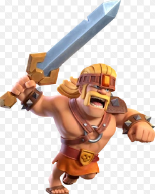
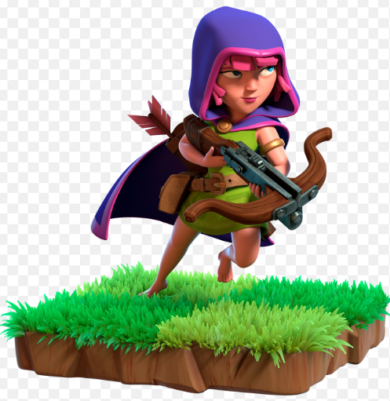
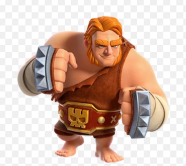

Para poder atacar a las aldeas enemigas tendremos que poner a entranar diferentes tropas en los campamentos, que son edificios de nuestra aldea, unos ejemplos de tropas que tenemos son los siguientes:
TROPAS
Tenemos un número variado de tropas que podemos usar, vamos a explicar las mas básicas para dejar que los nuevos jugadores descubran las más poderosas.
El barbaro, es una tropa bastante básica, tiene un daño y vida moderados es una defensa que se puede usar para denfender a otras con más daño.

La arquera es una tropa de ataque a distancia, tiene un daño mucho más elevado que los barbaros, estas pegan a distancia pero son muy vulnerables .

A continuación tenemos los gigantes, estas tropas su principal función es usarlas para defender a otras mas debiles, gracias a su alta salud resisten muy bien el daño, y sus objetivos son las defensas

Tenemos también un ejemplo de tropa aerea, como puede ser el globo, esta tropa tiene un gran daño pero no una excesiva salud hace como el gigante, su objetivo favorito son las defensas, pero necesitaran alguna tropa que pueda defenderlas.